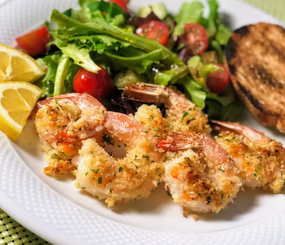

Garlic-Parmesan Shrimp

Description
Delicious crispy shrimp coated in a bread crumb-Parmesan mixture. My family can't get enough of it! I would suggest doubling the recipe if you have very large eaters because this is addictive! Serve with pasta and salad.
Ingredients
- nonstick cooking spray
- 1 cup dry bread crumbs
- 1 cup shredded Parmesan cheese
- 2 tablespoons dried parsley
- 1 ½ teaspoons garlic powder
- 1 pound large shrimp, peeled and deveined
- 2 tablespoons butter, melted, or more to taste
Steps
- Preheat the oven to 350 degrees F (175 degrees C). Spray a 9x13-inch glass casserole dish with nonstick cooking spray.
- Combine bread crumbs, Parmesan cheese, parsley, and garlic powder in a large resealable plastic bag. Seal and shake to mix ingredients together. Add shrimp and shake to coat.
- Lay shrimp flat in the prepared baking dish. Sprinkle with any bread crumb mixture remaining in the bag. Drizzle melted butter over the top.
- Bake in the preheated oven until starting to crisp, 15 to 20 minutes. Switch to broil setting until topping is light brown, 2 to 3 minutes.
Cook's Note:
You can use panko bread crumbs if you like.
Homepage